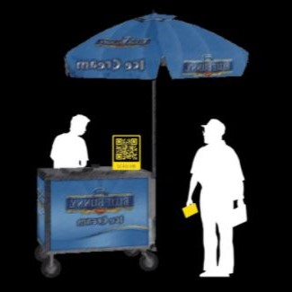

PHASE 1: FUND ESTABLISHMENT & PARTNER INVITATION
This is the preparation phase of the project, and the basic actions would be done by the designer. This phase aims to 1) establish a fund for street vendors’ cart and commissary fees and 2) initiate a partnership with non-profit organization The Street Vendor Project (SVP) in NYC.
This is the preparation phase of the project, and the basic actions would be done by the designer. This phase aims to 1) establish a fund for street vendors’ cart and commissary fees and 2) initiate a partnership with non-profit organization The Street Vendor Project (SVP) in NYC.
PHASE 2: PROJECT INTRO & OPINION COLLECTION
In this phase, designers will introduce the project and give out this handbook to street vendors. Vendors could express their aspirations and ideas about the project and process by attending the meetings or by filling out the surveys.
In this phase, designers will introduce the project and give out this handbook to street vendors. Vendors could express their aspirations and ideas about the project and process by attending the meetings or by filling out the surveys.
PHASE 3: CONTACT WITH THIRD-PARTY ORGANIZATION
In this phase, vendors' representatives would communicate with restaurants, markets, and mobile app development company through email, meetings, and handouts.
In this phase, vendors' representatives would communicate with restaurants, markets, and mobile app development company through email, meetings, and handouts.
PHASE 4: DESIGN EXAMPLE
This phase provides a pre-designed proposal of the physical kit for vendors to reference and design a kit themselves.
This phase provides a pre-designed proposal of the physical kit for vendors to reference and design a kit themselves.
PHASE 5: PHYSICAL KIT & MOBLIE APP DEVELOPMENT
In this phase, vendors would completely take over the project from the designers. They would fill out the surveys to design the physical kit and online app themselves based on their own demands and opinions as well as any other features from collaboration.
In this phase, vendors would completely take over the project from the designers. They would fill out the surveys to design the physical kit and online app themselves based on their own demands and opinions as well as any other features from collaboration.
PHASE 6: TUTORIAL FORUM
In this phase, vendors would organize forums by themselves, and representatives would teach other vendors how to assemble the kit and how to use the mobile APP when the designs are put into use.
In this phase, vendors would organize forums by themselves, and representatives would teach other vendors how to assemble the kit and how to use the mobile APP when the designs are put into use.
PHASE 7: WEEKLY GATHERING
In this phase vendors would start organizing meetings weekly to keep the project going by discussing other problems they are facing in their daily life and teach those who want to become a street vendor in the future how what to do and how to apply.
In this phase vendors would start organizing meetings weekly to keep the project going by discussing other problems they are facing in their daily life and teach those who want to become a street vendor in the future how what to do and how to apply.
PHASE 8: PROMOTION & ADVERTISEMENT
This phase, vendors would promote the project and system to other street vendors, restaurants, markets, cart companies, and commissaries through different forms of advertisement.
This phase, vendors would promote the project and system to other street vendors, restaurants, markets, cart companies, and commissaries through different forms of advertisement.
PHASE 9: PRACTICE IN OTHER CITIES
This phase vendors would start applying the project in other cities to fulfill a more widespread use.
This phase vendors would start applying the project in other cities to fulfill a more widespread use.
PHASE 10: SYSTEM MAINTENANCE
This is the continuing final phase of the project. In this phase, vendors decide whether they want to join the maintenance of this project after a free trial of 2 months and make their contribution to the fund every month. Vendors would create mutual-aid network by helping and communicating with each other on a regular basis.
This is the continuing final phase of the project. In this phase, vendors decide whether they want to join the maintenance of this project after a free trial of 2 months and make their contribution to the fund every month. Vendors would create mutual-aid network by helping and communicating with each other on a regular basis.